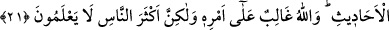

21. Mısır’da onu satın alan adam karısına: “Ona değer ver ve iyi bak! Umulur ki
bize faydası dokunur ya da onu evlat ediniriz.” dedi. İşte böylece (Mısır’da
adaletle hükmetmesi) ve kendisine (rüyada görülen) olayların yorumunu
öğretmemiz için Yûsuf’u o yere yerleştirdik. Allah, emrini yerine getirmeye
kadirdir. Fakat insanların çoğu bilmezler.
“Mısır’da onu satın alan adam” Mısır’ın mâliye ve melikin ordularının komutanı,
adı Kıtfir olan ve Aziz adıyla anılan kimse...
Kamus’ta şöyle denir: “Azîz”, hükümdar demektir. Çünkü hükümdarlar kendi
ülkelerinin halkından üstün ve onlara galip olurlar. Bu kelime, İskenderiyye’yi de içine
alan Mısır ülkesinin hükümdarlarının unvânı olmuştur.”
Yûsuf’u satın alan bu zâtın Mısırlı olduğunun açıkça söylenmesi, onun Yûsuf’u
bulanlardan çok az bir pahaya satın alan kişiden başka biri olduğunu göstermek içindir.
Nitekim el-İrşâd’da böyle geçmektedir.
Kâşifî ise şöyle der: “Yûsuf’u Mısırlılardan satın alan kimse dedi ki ....” Böyle
derken Aziz’i kastediyor.
Zamanın hükümdarı Amalika’ya mensup olan ve Yûsuf’a îman ettikten sonra Yûsuf’un
sağlığında vefat eden Reyyân b. el-Velid idi. Bu zâttan sonra Kâbûs b. Mus’ab
hükümdar olmuş, Yûsuf (a.s.) kendisini İslâm’a dâvet ettiği halde o bu dâveti
reddetmiştir.
Bu Kâbus, yazısının güzelliği hakkında: ‘Bu, Kâbûs’un yazısı mı yoksa Tâvûs’un
kanadı mı?’ denilen Kâbus değildir. Çünkü bu Kâbus, 403 senesinde vefat eden büyük
bir hükümdardır. Nitekim er-Ravza’da böyle denilmektedir.
Mûsâ (a.s.) zamanındaki Firavun, Yûsuf (a.s.) zamanındaki Firavun’un neslindendir.
Bu bakımdan “Andolsun ki (Mûsa’dan) önce Yûsuf da size açık deliller getirmişti.”
(Gâfir, 40/34) âyeti, çocuklara atalarının durumu hatırlatılarak hitap etmek
kabilindendir.
Kâşifî şöyle der: “Medyen’den gelen kervanın haberi Mısır’a ulaşınca azizin
memurları kervanın yolunun başına geldiler. Yûsuf’u görünce onun cemalinin
parlaklığına âşık ve hayran oldular. Mısır’ın azizine haber verdiler. O da daha Yûsuf’u
görmeden kulaktan âşık oldu.”
Aşık olur kulak bâzen gözden önce...
Yûsuf’un sâhibinden, onu satışa sunmasını ricâ ettiler. O da Yûsuf’u süsleyerek
pazara götürmek üzere dışarı çıkardı. Mısırlılar onu görünce hayran kaldılar.
O sevgili bezenmiş, süslenmiş pazara geldi
Kapıdan ve duvardan bile feryat yükseldi